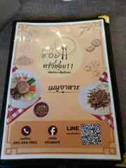

รวมสถานะผู้ร่วมงานไว้กับแบบเลือก Gift & Theme
DIGITAL INVITATION · CCR YEAR-END CELEBRATION
18
OFF SHIFT.
ON THE TABLE.
ปีนี้เราไม่ได้แค่ “ไปกินข้าวด้วยกัน” — เราจะช่วยกันออกแบบค่ำคืนนี้ ตั้งแต่เมนูบนโต๊ะ ของขวัญ ธีมการแต่งตัว ไปจนถึงบรรยากาศของงาน
DATEศุกร์ 18 ธันวาคม 2026
VENUEครัวซอย 11 · ประเวศ
TIMEรอยืนยันเวลา


ONE TEAMONE TABLEONE NIGHT
SCROLL TO ENTER ↓
01 / THE INVITATION
ค่ำคืนของทีม
ที่ทุกคนมีส่วนเลือก
แทนที่จะส่ง PDF หลายหน้าแล้วต้องไล่หาข้อมูล เรารวม “บัตรเชิญ + สถานที่ + เส้นทาง + กำหนดการ + โหวตอาหาร + จับของขวัญ + ธีมงาน” ไว้ในเว็บเดียว
เปิดจากมือถือได้ทันที ส่งต่อเป็นลิงก์หรือ QR ได้ และส่วนที่เป็นการโหวตจริงจะบันทึกลงฐานข้อมูลกลางด้วยรหัสเชิญส่วนตัว
02 / SAVE THE DATE
FRIDAY
FRIDAY
18.12.26
—DAYS
—HOURS
—MIN
วันจัดงานยืนยันแล้ว · เวลาเริ่มงานจะแจ้งเมื่อสรุป Final Schedule
03 / CHOOSE YOUR NIGHTคืนนี้เป็นของพวกเรา
คืนนี้เป็นของพวกเรา
เลือกได้จริง ไม่ใช่แค่ดู
แต่ละหน้าคือหนึ่งส่วนของงาน ไม่ต้อง Login เพื่อเข้าดู และทุกอย่างออกแบบให้กดใช้งานบนมือถือได้
01
โหวตอาหาร
8 หมวด · 56 เมนู · 1 ตัวเลือกต่อหมวด พร้อมสรุปงบก่อนส่งคะแนน
OPEN FOOD VOTE ↗ 02ของขวัญ & Theme
เลือกว่าจะจับของขวัญงบเท่าไร และค่ำคืนนี้อยากแต่งตัวใน Mood แบบไหน
MAKE YOUR PICK ↗ 03สถานที่ & เส้นทาง
ข้อมูลร้านจริง แผนที่จริง ปุ่มนำทางจากตำแหน่งของผู้กด และภาพเมนูจากร้าน
EXPLORE VENUE ↗ 04Event Guide
ภาพรวม Concept, Flow ของค่ำคืน, สิ่งที่ควรรู้ และ FAQ ในหน้าเดียว
VIEW THE GUIDE ↗
04 / THIS YEAR'S CONCEPT
CCR
CCR
AFTER HOURS
ออกจากโหมดงาน แล้วกลับมาเป็นทีมเดียวกันบนโต๊ะเดียวกัน — ไม่เป็นทางการเกินไป ไม่เชย และไม่ต้องแต่งเวอร์เพื่อให้สนุก
DINNERVOTEGIFTPHOTOTEAM
“Good events don't start at the venue. They start the moment the invitation makes people want to be there.”
จาก “เจอกันนะ”
ไปจนถึง กลับบ้านพร้อมความทรงจำ
เวลารายละเอียดจะใส่เมื่อ Final Schedule ถูกยืนยัน เพื่อไม่สร้างข้อมูลปลอมบนบัตรเชิญ
01ARRIVE
มาถึงร้าน · เช็กอิน · ถ่ายรูป
02SETTLE IN
รวมทีม · เลือกที่นั่ง · เริ่มค่ำคืน
03DINNER
เมนูจากผลโหวตของทีม
04GIFT
กิจกรรมจับของขวัญ หากทีมเลือกเล่น
05MOMENTS
รูปทีม · เกมเบา ๆ · โมเมนต์ของปี
06WRAP
สรุปค่ำคืน · กลับบ้านโดยสวัสดิภาพ
07 / EVERYTHING IN ONE LINKข้อมูลที่ต้องรู้
ข้อมูลที่ต้องรู้
อยู่ครบ แต่ไม่ยัดทุกอย่างไว้หน้าเดียว
หน้าแรกแสดงเฉพาะสิ่งสำคัญ ส่วนรายละเอียดเปิดดูต่อเมื่อจำเป็น — เพื่อให้เว็บยังดูสะอาดและใช้งานเร็วบนมือถือ
โหวตจริงผ่านรหัสเชิญและบันทึกฐานข้อมูลกลาง
฿300 / ฿500 / ฿300–500 / ปีนี้ไม่จับ
มี Direction แต่ไม่บังคับ Costume
กดนำทางจากตำแหน่งของผู้ใช้โดยไม่เผยพิกัดต้นทางในเว็บ
ข้อมูลที่ยังไม่ Final แสดงสถานะชัดและอัปเดตที่ลิงก์เดิม
SEE YOU AROUND THE TABLE
18 DECEMBER 2026
หนึ่งลิงก์สำหรับข้อมูลทั้งหมดของงาน — และหนึ่งค่ำคืนที่เราออกแบบร่วมกัน